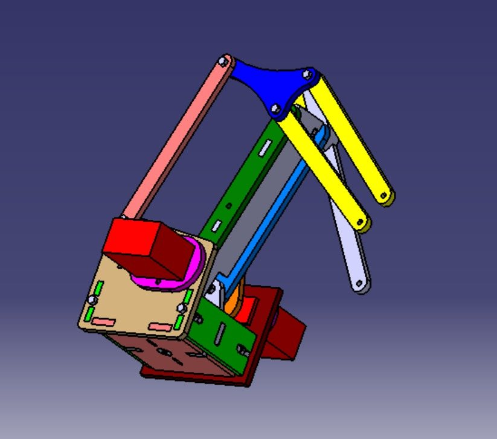

Stage de fin d’études · expérience professionnelle
Gentherm — Support de double bobine
Étude et amélioration d’une machine de couture industrielle : conception d’un support double bobine sous CATIA V5.
Voir le projetMaster MRMI · ENSET Mohammedia
Étudiant en mécanique, robotique et matériaux innovants
Mon parcours associe conception de produits industriels, production industrielle, mécatronique et management de l’innovation. Je travaille sur la conception mécanique, la modélisation, la simulation et l’amélioration de systèmes industriels, à travers des stages et des projets documentés sur ce site.
Objectif professionnel : évoluer vers la conception mécanique, la robotique et les systèmes mécatroniques.
Stage de fin d’études · expérience professionnelle
Étude et amélioration d’une machine de couture industrielle : conception d’un support double bobine sous CATIA V5.
Voir le projet
Projet académique · projet de fin d’études BTS, réalisé en binôme
Conception, modélisation et commande d’un bras manipulateur à quatre degrés de liberté (BTS CPI).
Voir le projet
Projet académique · Master MIT (M1), module Management de l’IA, projet d’équipe
Système intelligent de gestion de stock : prédiction de la demande (Random Forest), analyse de sentiment des avis clients et alertes de rupture.
Voir le projetPour échanger sur mes projets ou mon parcours :